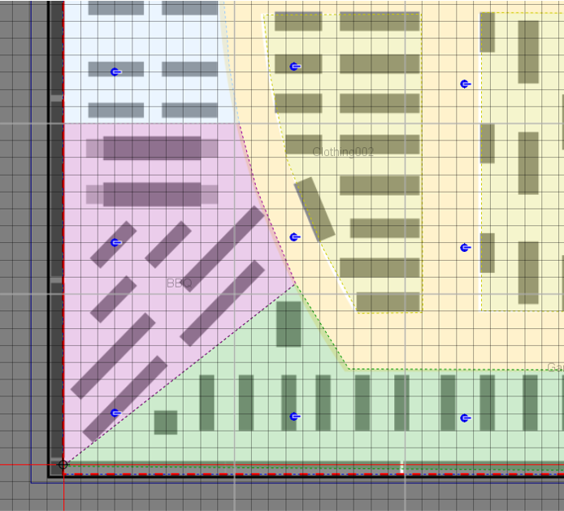
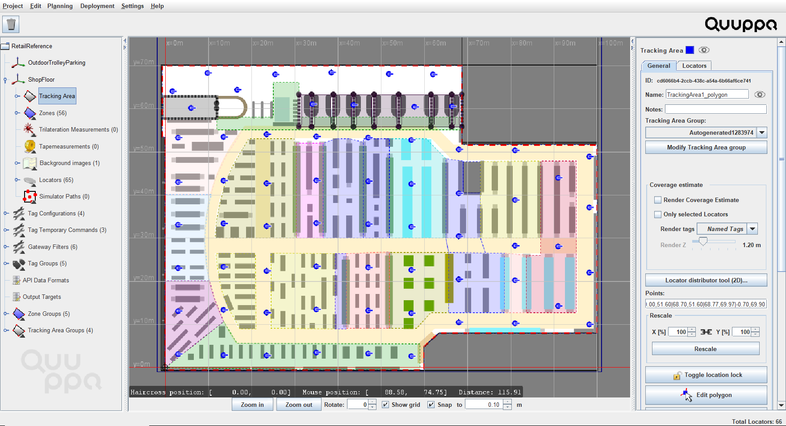
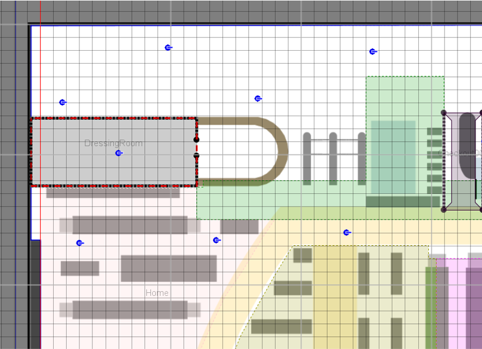
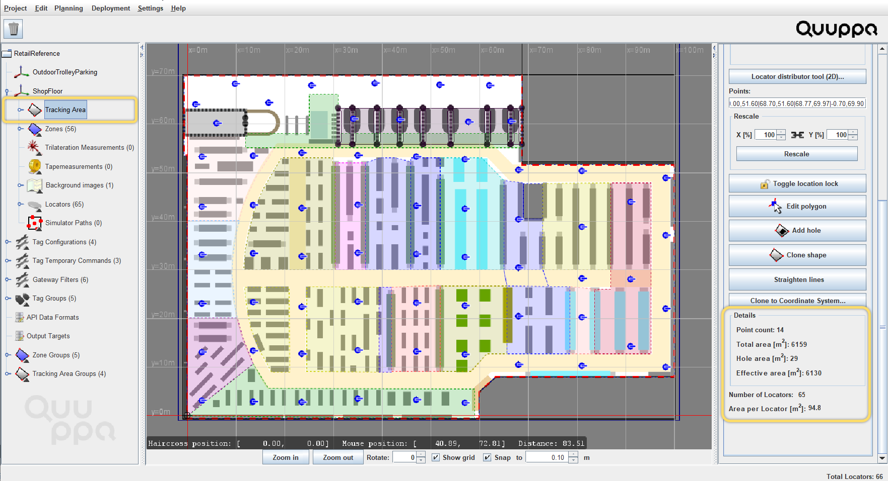
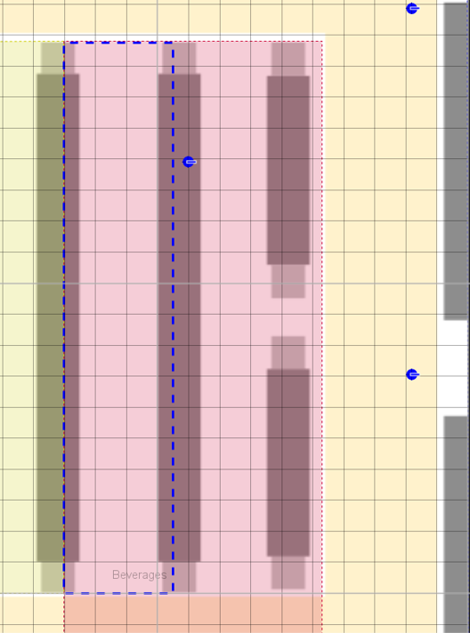
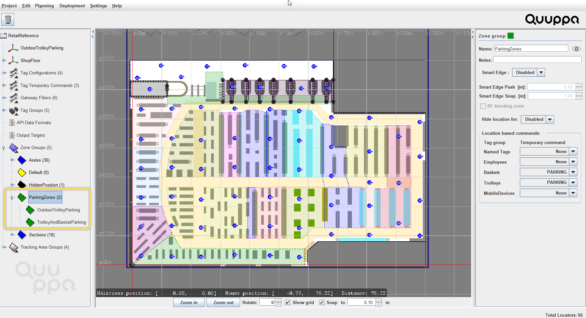
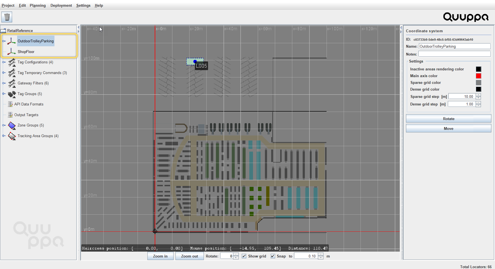

Retail Reference Project
This section will walk through the objects included in our reference project for a retail use case and provide you with some benchmarks for which settings and parameters work well in these types of environments. You can use the reference project to learn more about Quuppa projects or as a template for your own custom project files.
Download our retail reference project file from here.
The reference project provides good rules of thumb for similar deployments but please remember that variations in your environment may affect the optimal settings for your deployment. To find the best settings, we recommend that you always simulate and test your project thoroughly before deploying the system.
Also, as you work with the project file, remember to save it every now and then to make sure you don't accidentally lose any of the edits that you have already made.
1. Project File

The retail reference project uses default settings that work well for use cases such as retail stores and supermarkets. If you are using the reference project as a template for your own project, you can edit these default settings to better suit your deployment environment.
For retail deployments, use the following guidelines for defining the default project settings:
| Recommended Selection | Explanation | |
|---|---|---|
| PROJECT NAME: | ||
| Project Name | Provide a descriptive name for your project (e.g. QuuppaRetail) | A descriptive name will help you to identify the project from other projects later on. |
| OPERATION MODE: | ||
| Operation Mode | Proprietary or BLE | The proprietary
mode reduces the amount of potential interference from
Bluetooth signals sent by other devices. For this reason, we
recommend the use of the proprietary mode whenever
possible. However, some retail applications are designed to track smartphones and in these cases, the use of the BLE mode is required. If you are planning on running the system in BLE mode to tracking smartphones, please talk to your Quuppa Sales Engineer or Quuppa Support first. |
| LOCATION DEFAULTS: | ||
| Installation height (m) | 4.3m | The installation height
will depend on your deployment environments. Somewhere around
4-5m is quite common for retail buildings and in the
reference project we have used 4.3m. When evaluating the installation height, make sure to check that no metal objects (e.g. lights) will block the Locators view of the tracking area) |
| Default Locator type | Q17, indoor Locator | Retail deployments are
indoor deployments, so the recommended Locator type is
Q17. However, if the installation height required for your space (or some parts of your retail store) is above 8m, then you should consider choosing Q35 Locators instead. The Q35 also works well in indoor environments but has a longer range than the Q17. |
| TRACKING AREA DEFAULTS: | ||
| Tracking area type | Semiconfined or Confined | If the store is a large
space with shelving and other dividing elements, use
semi-confined. If the store is very small or the installation height of the Locators is very low, confined may be more appropriate. |
2.Background Image

We always recommend the use of a background image as it provides a good visual reference for building the project file. Even though the system does not "read" the background image (i.e. identify walls and other structures marked in the map), it will help you build the required elements into your project file (e.g. zones, smart zones and tracking area edges) and place the Locators.
However, it is good to remember that the background image is only as good as it is accurate. If the map is not up to date, it can be misleading. If it is not very good quality, it can lead to inaccurate measurements that affect positioning accuracy. Most importantly, if it is not scaled well, it will throw off any generated positioning data, reducing the accuracy of the system. For these reasons, we recommend that you use the most detailed and high quality background image that you can find and scale it carefully before use.
When scaling a background image, it is a good idea to use known and fixed measuring points within the space (e.g. primary walls or pillars) as these are more likely to be reflected accurately in the floor plan. Additionally we recommend that you use longer measurements for scaling where possible (e.g. the length of a corridor vs a small room) as this will provide more accurate scaling measurements. This is because any errors in distance measurements will multiply in the scaling process.
A best practice for ensuring that measurements are as accurate as possible is to first scale the image and then rescale it, just to make sure. We also recommend taking a few additional reference measurements within the map to double check that the scaling matches the real space. The extra effort at this stage will pay off later, as all the other project layers are built on top of this one.
In retail cases, the shelving layouts typically change over time and so it is important to remember to edit the project file, including zone layouts, when these modifications occur. This way the system can continue to provide accurate and meaningful positioning results, even as the store evolves over time.
If you are using the reference project as a template, you can delete the image that comes with the reference project file and add your own background image instead. Just remember to scale it as accurately as you can.
3. Tracking Area Polygon

In the reference project, you can see that the tracking area polygon has been modified to fit the edge of the area that will be tracked (as opposed to the edge of the background image, as is generated automatically by the QSP when using the New Project Wizard). This is important as this defines the area that is tracked for the QPE.
As retail deployments are indoor deployments, the edge of the tracking area is often set to follow the inner edge of the store's main walls. This means that the QPE will only track tags moving inside store. As the tags cannot physically enter the wall, there is no reason to include the wall in the tracking area for the project.

If you are using the reference project as a template, modify the tracking area polygon to fit the desired tracking area for your deployment.

4. Locators, Coverage & Sensitivity Settings

In the ShopFloor coordinate system of the reference project, you can see that 65 Locators have been distributed relatively evenly around the tracking area. This is the best way to get good and even coverage across the tracking area and ensure the accurate positioning results even at the edges of the deployment. The Locator placement in the main store area also takes into account how the shelves have been arranged in the space.
A single Locator has also be placed in the zone called DressingRoom in the upper right corner of the tracking area, even though tags entering this zone aren't tracked by the system as the hide location for zone group feature has been enabled for this zone. This is because in order for the system to be able to filter out positioning data for tags in this zone, it needs to know that the tag is in the zone. The Locator in this zone can provide the system with this verification.

The Locator sensitivity for the reference project has also been optimised for retail environments. This reduces unnecessary load for the server machine and the Quuppa Positioning Engine (QPE) as now only the Locators near the tag will "hear" it. Generally speaking, there are two types of retail applications, which require different system tuning:
- Tracking tags - A level of about -12dB is a good starting point for deployments that only track tags.
- Tracking tags & smartphones - These cases usually require a lower
sensitivity level due to the transmission power of iOS and Android devices.
Around -18dB is a good starting point. Note: Please contact your Sales Engineer or Quuppa Support if you are planning to track smartphones so that we can help you optimise your project for this purpose.
As the optimal sensitivity level is always case-specific, it's important to adjust and test it using the Render noise option in the QSP's Coverage Estimate tool. Once you have found a good level using the QSP tools, it is important to also test the settings with Locators in the real deployment environment using the sync/s and locatorRSSIcountvalues available in the QPE Web Console's Locator details table. For more information, please see our Best Practices for Air Interface Load Management.
If you are using the reference project as a template for your own project, make sure to:
- Add Locators to the project file as needed. When adding Locators to a
project file, use the Locator Distributor Tool to make sure
that they are evenly distributed around the tracking area. It's always good to
begin with the Locator Distributor Tool to find the
approximate number of Locators for the space and then fine-tune the placement of
the Locators manually and adding individual Locators as needed. To check the
numbers for the project, select the tracking area in the object tree on the left
(or by clicking on it in the map view) and check the numbers presented at the
bottom of the General tab in the panel on the
right.

- Use the coverage Estimate tool to check the project looks good from a
coverage perspective. We recommend that you use the coverage estimate tool to check the
results for both the Render Coverage Estimate and the Render noise
options to make sure that your project is well tuned. Good coverage is indicated
with the colour green for both. If the coverage estimate rendering looks yellow,
you might consider adding some more Locators to the project and if your noise
rendering is very blue, you can tune the Locator sensitivity settings for your
project to prevent unnecessary system load (to learn more about the sensitivity
setting, please read Edit Locator
Sensitivity).Tip: As you tune the coverage, remember that the coverage estimate tool does not "see" the walls, shelves or other physical obstacles in your environment, so use the results as a guide and then evaluate the need for Locators and their placement yourself based on the deployment environment. It is also good to remember that the material that the shelves in the retail store are made of can affect the radio propagation in the space and this should be accounted for when planning the project.Note: The area type (i.e. semiconfined or confined) selected also affects the coverage estimate and positioning calculations made by the positioning engine, so make sure to select the appropriate area type before evaluating the coverage estimate.
5. Zones, Smart Zones & Zone Groups

The retail reference project uses a combination of zones, smart zones and zone groups to create geofencing areas that are easy to manage.
The zones provide additional information for the positioning data calculated by the QPE, e.g. Basket001 is now in the zone Checkout001.
The smart edge zones enable the defining of physically separated areas within the tracking area for the QPE (e.g. shelves or other physical structures that tags cannot pass through). In retail use cases, we recommend that you use these smart edge enabled zones to define aisles (with openings at the ends of the aisle) in order to provide more information to the system about the positions of the shelves so as to improve positioning accuracy and reliability. This is how we have built the reference project, before hiding the smart edge enabled zones from view so that it is easier to see the normal zones.

In the retail reference project, we have also added two zones (TrolleyAndBasketParking and OutdoorTrolleyParking) that use custom temporary command called PARKING for shopping trolleys and baskets. Both zones are in the zone group ParkingZones for easy tuning later. The reason behind the custom temporary command in these zones is that the action of picking up or returning a trolley or basket from the station could trigger the accelerometers for all of the tags in that area, if default settings were used. This would cause a significant and unnecessary spike in air interface load whenever a basket or trolley is moved. With the temporary command for these zones, the tags will be commanded to a low transmit rate, even if their accelerometer is triggered. Once they move outside the PARKING zone, the tags will behave according to their normal configurations.

If you are using the reference project as a template, edit the zones and smart zones as needed.
We always recommend the use of zone groups for different types of zones as they give you access to all of the zones features and enable you to adjust the settings for all zones in that group just by changing the settings for the group. This will save you time later, if you notice that you need to adjust the settings that you selected when you first designed the project.
6. Tag Groups & Tag Configurations

The reference project uses two of the default tag configurations provided by the QSP: ASSET_TAG for tracking shopping baskets and trolleys and ID_BADGE for tracking employees. These default configurations are configured for optimal performance for such use and so it is a good idea to use them whenever they are applicable.
The tags in the reference project have also been assigned to tag groups for easy management. This means that any changes to their configurations can be made for the tag groups as a whole, making it much easier to manage any later changes to tag configurations.
If you are using the reference project as a template, you can edit, add and remove tag groups to suit the needs of your project.
7. Additional Coordinate Systems

The reference project has two coordinate systems, both using the same background image. One coordinate system is used for tracking in the store itself, and the other is used to provide coverage for the outdoor shopping trolley parking spot. This coverage has been added to prevent tags attached to trolleys from mistakenly being shown inside the store within the main tracking area. Accurate tracking is not necessary and just one Locator is sufficient to provide the needed coverage.

As individual coordinate systems should be logically separated physical spaces, many supermarket and retail store cases do not require multiple coordinate systems. However, multiple coordinate systems may be needed if there are multiple floors that need to be tracked, e.g. in a department store.
If multiple coordinate systems are needed and the floor layouts are the same for the different floors, then the same background image can be used for all of the floors to keep the project file size to a minimum. However, if the layouts are different, then you can also add a background image for each floor. If you do choose to use separate background images for different floors, make sure to align them properly using the origin in the QSP's map view.
Each coordinate system can then be customised according to the needs of that coordinate system. For example, the Locator distribution may be different due to structural differences and the zones may be arranged differently due to differing geofencing needs.
These are the key objects and settings included in our retail reference project. Feel free to use the reference project file as needed. You can edit the file to test different settings, or run a simulation using the Quuppa System Simulator (QSS) or use it as a template for your own project.
For more detailed instructions on how to use the QSP features, please refer to our Quuppa Site Planner User Manual or other documents available on our documentation site. Also feel free to contact us (via support@quuppa.com) if you have any questions.